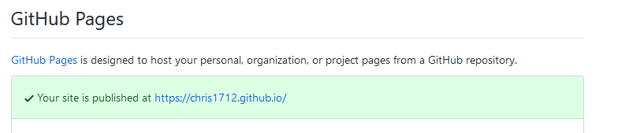

Setting up Jekyll for GitHub Pages
As a start to this blog I thought I'd write a little about the minimal trouble I had getting it up and running. I'd not used jekyll or anything similar before so I had a few problems to work through, but all things considered it's a nice and straightforward system. However, some of the small issues I found may have solutions relevant to others, so I've written a little more below.
Initial setup of a simple GitHub Pages user site with a theme
To do this simply create a repo named "username.GitHub.io", including an index.md file. Then in the repo settings under the "GitHub Pages" section you can use the Theme Chooser to pick out a theme with styling you like. Once that's done, back on the settings page there should be a success message, like so:

Navigating to the url will show the contents of your index.md, rendered according to the theme you've picked. Note that in my case there was a delay of up to a minute between pushing my changes to GitHub and them showing up.
Adding blog posts to your GitHub Pages
Having created (the minimal theme took my fancy), the Jekyll documentation suggests you create a _posts folder, underneath which you can place markdown posts named in the format YYYY-MM-DD-post-title.md.
Adding links to your posts to the front page
Having done this and pushed your changes to the repo, you may find no links appear on your homepage.
This is because most of the themes don't have their homepages configured to include links to the posts. To fix this you can override the template provided as part of the theme - find the _layouts/default.html file in the theme's repo and copy it into your pages repo, in the same location. Then add, in the desired area, this block of code:
<h2>Posts</h2>
<ul>
{% for post in site.posts %}
<li>
<a href="{{ post.url }}">{{ post.date | date: "%Y-%m-%d" }} - {{ post.title }}</a>
</li>
{% endfor %}
</ul>
</section>
With that done your site should include links to your posts.